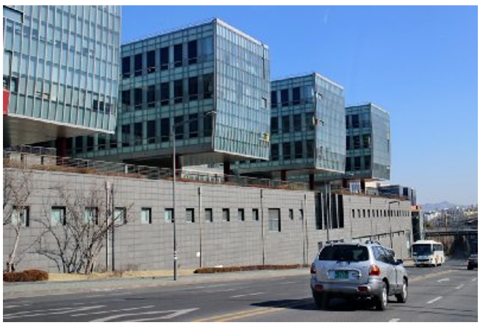
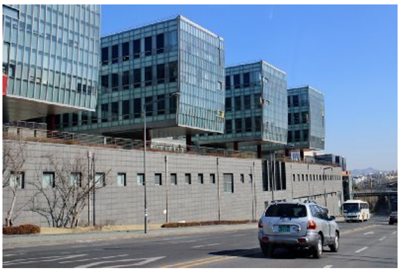

30년 전, 국민대학교에 무슨 일이 있었는지 함께 보실까요?
1. 복지관
미래관으로 연결되며 빵집, 은행 등 학우분들이 자주 출입하는 복지관!
2005년 당시 복지관 증축공사 모습입니다.
복지관은 지상 5층, 지하 1층으로 구성되어 있으며
2005년 2학기부터 사용 가능하였다고 하네요!
도로 전면에 위치해 많은 사람들의 시선을 모을 수 있는
독특한 구조를 갖추는 것에 힘썼으며, 집중 공사와 같은
어려움에도 불구하고 착-준공 무재해를 이룰 수 있었다고 합니다.
2. 성곡도서관
다음으로는 다양한 자료를 보거나, 공부를 하기위해 많이 찾는 도서관!
1993 도서관의 모습입니다. 지금과는 사뭇 다른 분위기네요.
1993 도서관의 모습입니다. 지금과는 사뭇 다른 분위기네요.
우리 도서관은 코로나를 맞으며 2021년 리모델링이 있었는데요.
도서 대출·반납 기능 위주였던 1층 중앙대출실 공간을
이용자 중심의 문화 학습 놀이터로 전환했고,
자료 출납 기능과 더불어 학우들의 정보 활용과 요구에 실시간으로 대처할 수 있도록
'인포메이션 커먼스'를 신설해 효율성을 높였습니다.
3. 운동장
다음으로는 경기 운영과 학생들의 자유로운 쉼터로 활용되는 운동장입니다!
1999년 우리학교 운동장의 모습입니다.
지금은 잔디가 있지만 99년에는 모래 운동장이었네요!
그리고 옆에 보이는 계단이 무려 73계단이었다고 하네요.
4. 정문
마지막으로는 거의 모든 학우들이 매일 이용하는 정문입니다!
1977년 당시의 정문 모습인데요. 무언가 허전하지 않으신가요?
네 맞습니다.
학우들 사이에서 ‘록금이’로 불리는 귀여운 Mr.doctor 동상이 없죠!
Mr.doctor는 2019년 2월 19일 설치되었으며,
이탈리아 산업디자이너 스테파노 지오반노니의 작품이라고 하네요!
이름은 당시 공모전을 통해 744개의 이름 응모받았지만,
대부분 교명을 단순 변형하는 형태였으며, 그외 응모작 중에서는 부르기 쉽고 독창적이며
조형물의 의미를 잘 부여한 네이밍이 없어 선정에 어려움을 겪었습니다.
때문에 학교측에서 Mr.doctor라는 이름을 지었고,
국민*인 모두가 원하는 분야에 정통한 전문가가 되길 응원한다는 의미를 담았다고 합니다.
또한 Mr.doctor의 금빛은, 등교하는 학생들 및 국민대를 방문하는 모든 사람들에게
'금빛 미래'가 펼쳐지길 소망하고, 응원하는 마음을 담았다고 합니다.
지금까지 국민대학교 캠퍼스 역사를 알아보셨는데, 도움이 되셨나요?
앞으로도 국민대학교의 역사가 궁금하거나 관심이 생기신다면 기록물관리위원회를 찾아주세요!
그럼 다음 콘텐츠에서 만나요!